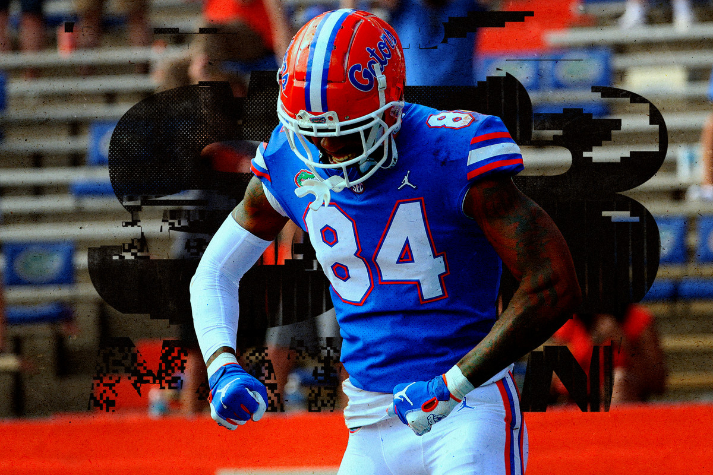

The game of football is said to be invented in the mid-19th century. In the year 1863 rugby football and association football branched off and Football Association in England was established. However, China claims to have played the first version of football centuries ago. Both rugby football and association football were widely loved and played across the Atlantic. As rugby football came to be known as rugger and association football came to be known by the name, soccer, the Americans came up Charles Goodyear designed and crafted the very first vulcanized rubber football in the year 1855. Most of the footballs are now being made with rubber bladders.The first international association football match was played between Scotland and England in the year 1872. The match played by the national teams of England and Scotland was held at Scotland Cricket Club’s ground located at Hamilton Crescent in Partick Scotland.